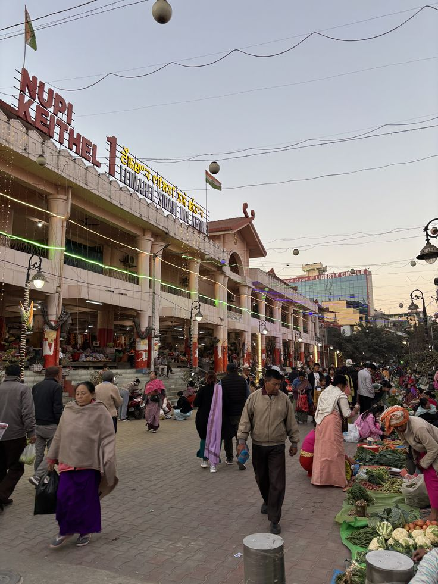

01 / HERITAGE
Ima Keithel
A symbol of feminine power, Ima Keithel is a more-than-500-year-old all-women's market run by over 3,000 Emas (mothers). It is a popular shopping destination offering a variety of local and traditional goods.
Imphal, Manipur
View on Map
WHY VISIT?
- Experience a unique women-run marketplace
- Shop for local and traditional products
- Experience everyday Manipuri culture
- Explore one of Manipur's most distinctive markets
TRAVEL TIPS
- Best time: Morning–afternoon
- Carry cash for smaller purchases
- Ask before photographing vendors